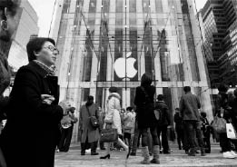

Apple Mağazaları
Dahi Barları ve Siena Kumtaşları

New York’taki Beşinci Cadde mağazası
Müşteri Deneyimi
Jobs herhangi bir şeyin kontrolünden feragat etmekten nefret ediyordu, özellikle de bunu yapması müşteri deneyimini etkileyebilecekse. Ama bir sorunla karşı karşıyaydı. Sürecin kontrol etmediği bir kısmı vardı: bir mağazadan bir Apple ürünü satın alma deneyimi.
Byte Shop günleri geride kalmıştı. Endüstri satışları meraklılara yönelik yerel bilgisayar dükkânlarından mega zincirlere ve büyük mağazalara kayıyordu ve buralardaki satış görevlilerinin çoğu Apple ürünlerinin kendine özgü yönlerini açıklayacak kadar bilgili ve hevesli değillerdi. “Satıcının tek kaygısı 50 dolar kâr etmekti,” dedi Jobs. Diğer bilgisayarlar birbirlerine epey benzeseler de Apple yenilikçi özelliklere sahipti ve daha pahalıydı. Jobs bir iMac’in rafta bir Dell’le bir Compaq’in arasında durmasını ve bilgisiz bir satış görevlisinin özellikleri sayarken hepsini aynı kefeye koymasını istemiyordu.
Jobs 1999’un sonlarında, bir dizi Apple perakende satış mağazası açabilecek yöneticilerle büyük bir gizlilik içinde görüşmeye başladı. Adaylardan biri tasarım tutkunuydu ve doğuştan perakendeci birinin çocuksu şevkine sahipti: Target’ın pazarlama bölümünün başkan yardımcısı Ron Johnson farklı görünüşlü bazı ürünlerin, örneğin Michael Graves tarafından tasarlanmış bir çaydanlığın piyasaya sürülmesinden sorumluydu. “Steve’le konuşmak çok kolay,” dedi Johnson ilk görüşmelerini anımsarken. “Birden karşımda yırtık kot pantolonlu ve boğazlı kazaklı biri beliriverdi ve neden muhteşem mağazalara ihtiyaç duyduğundan bahsetmeye başladı. Apple başarılı olacaksa, dedi bana, yenilikçiliğimiz sayesinde kazanacağız. Ve müşterilerle iletişim kurmanın yolu yoksa yenilikçilik işe yaramaz.”
Johnson Ocak 2000’de tekrar iş görüşmesi yapmaya gelince Jobs yürüyüşe çıkmalarını önerdi. Sabah 8:30’da 140 mağazalık dev Stanford Alışveriş Merkezi’ne gittiler. Mağazalar henüz açılmadığından bütün koridorlarını defalarca gezdiler ve organizasyonundan, büyük bonmarşelerin diğer mağazalara olan etkisinden ve neden bazı özel mağazaların başarılı olduğundan bahsettiler.
Yürüyüp konuşmayı sürdürürlerken 10’da mağazalar açılınca Eddie Bauer’e girdiler. Buranın alışveriş merkezinin dışında ve otoparkta birer girişi vardı. Jobs Apple mağazalarının tek bir girişi olmasına karar verdi; böylece deneyimi kontrol etmek kolaylaşacaktı. Ayrıca Eddie Bauer mağazasının fazla uzun ve dar olduğunda hemfikir oldular. Müşterilerin mağazaya girer girmez içerisinin düzenini anlamaları önemliydi.
Alışveriş merkezinde teknoloji mağazası yoktu ve Johnson sebebini açıkladı: Bilgisayarlar pahalıydı ve müşterilerin sık satın aldığı şeyler değildi, dolayısıyla müşteriler arabaya binip de daha uzak ama kirası daha düşük yerlere gitmeye gönüllüydüler. Jobs buna katılmadı. Apple mağazaları alışveriş merkezlerinde ve ana caddelerde olacaktı – yaya trafiğinin bol olduğu yerlerde olacaktı, bu ne kadar pahalıya gelirse gelsin. “Onları ürünlerimize bakmak için arabaya binip de on beş kilometre yol kat etmeye ikna edemeyebiliriz, ama üç metre yürümeye ikna ederiz,” dedi. Özellikle Windows kullanıcılarını çekmek gerekiyordu. “Mağazaları yeterince davetkâr kılarsak müşteriler önünden geçerken meraklanıp içeri girerler ve onlara ürünlerimizi gösterme fırsatını bulduk mu kazanırız.”
Johnson mağazanın boyutunun markanın öneminin sinyalini verdiğini söyledi. “Apple Gap kadar büyük bir marka mı?” diye sordu. Jobs Apple’ın çok daha büyük olduğunu söyledi. Johnson dolayısıyla Apple mağazalarının da daha büyük olması gerektiğini söyledi. “Yoksa dikkat çekmezsiniz.” Jobs Mike Markkula’nın sözünden, iyi bir şirketin “yükleme” yapması gerektiğinden bahsetti – iyi bir şirket değerlerini ve önemini ambalajlamadan pazarlamaya dek yaptığı her şeyde belli etmeliydi. Johnson buna bayıldı. Şirket mağazalarına kesinlikle uyan bir sözdü. “Mağaza markanın en güçlü fiziksel ifadesi olacak,” dedi. Gençliğinde Ralph Lauren’ın Manhattan’da, 72. Sokak’la Madison Caddesi’nin köşesinde açtığı ahşap panelli, tablolarla dolu, malikâneye benzer mağazaya gittiğinden bahsetti. “Ne zaman bir polo gömlek alsam aklıma Ralph’ın ideallerinin fiziksel bir ifadesi olan o malikâne geliyor,” dedi Johnson. “Mickey Drexler da Gap’te aynı şeyi yapmıştı. Bir Gap ürününü düşününce insanın aklına ister istemez tertemiz, ahşap döşemeli, beyaz duvarlı, giysilerin katlı durduğu o geniş Gap mağazaları geliyordu.”
Konuşmaları bitince Apple’a gidip bir toplantı odasında oturdular ve şirketin ürünleriyle oynadılar. Çok ürün yoktu, geleneksel bir mağazanın raflarını dolduracak kadar yoktu, ama bu bir avantajdı. Açacakları mağazaların ürün azlığından faydalanmasına karar verdiler. Minimalist, havadar ve insanların ürünleri deneyebilecekleri kadar geniş olacaktı. “Çoğu insan Apple ürünlerini bilmiyor,” dedi Johnson. “Apple’ı bir tarikat olarak görüyorlar. Tarikat olmaktan çıkıp havalı bir şeye dönüşmek gerek ve insanların içinde ürünleri deneyebilecekleri muhteşem mağazaların buna katkısı olur.” Mağazalar Apple’ın karakterini ifade edecekti: keyifli, rahat, havalı, yaratıcı ve havalıyla iticinin arasındaki çizginin olumlu tarafında.
Prototip
Jobs’ın sonunda yönetim kuruluna açtığı fikri sıcak karşılanmadı. Gateway bilgisayar şirketi banliyö mağazaları açtığından beri batıyordu ve Jobs’ın kendi mağazalarının daha iyi iş yapacağını, çünkü daha pahalı alışveriş merkezlerinde açılacaklarını söylemesi rahatlatıcı değildi. “Farklı düşün” ve “delilerin şerefine” sözleri reklam sloganı olarak iyiydi, ama yönetim kurulu bunları şirket stratejisinde rehber olarak almak konusunda tereddütlüydü. “Kafamı kaşıyordum ve delilik bu diye düşünüyordum,” diye anımsıyordu, 2000’de Jobs’ın Apple yönetim kuruluna katılmasını teklif ettiği Genentech CEO’su Art Levinson. “Biz küçük bir şirketiz, marjinal bir oyuncuyuz. Böyle bir fikri destekleyebileceğime emin olmadığımı söyledim.” Ed Woolard da şüpheciydi. “Gateway bunu denedi ve başarılı olmadı, Dell ise mağazalar olmadan müşterilere doğrudan satış yapıyor ve başarılı oluyor,” diye itiraz etti. Jobs yönetim kurulunun fazla itiraz etmesinden hoşlanmazdı. Bu en son olduğunda yönetim kurulunun neredeyse tamamını değiştirmişti. Bu seferse Woolard, hem kişisel sebeplerden dolayı hem de Jobs’la çekişmekten bıktığından, şimdi istifa sırasının kendinde olduğuna karar verdi. Ama o bunu yapmadan önce, yönetim kurulu demene kabilinden dört Apple mağazası açılmasını kabul etti.
Jobs’ın yönetim kurulunda tek bir destekçisi vardı. Jobs, Gap’in CEO’suyken o uyuşuk mağaza zincirini Amerikan rahat giyim kültürünün ikonu haline getiren, Bronx doğumlu perakendeciler prensi Millard “Mickey” Drexler’ı 1999’da yönetim kuruluna getirmişti. Drexler tasarım, imaj ve müşteri arzuları konularında Jobs kadar başarılı ve yetenekli olan, dünyadaki çok az kişiden biriydi. Ayrıca uçtan uca kontrolde diretmişti: Gap mağazaları yalnızca Gap ürünleri satıyordu ve Gap ürünleri neredeyse yalnızca Gap mağazalarında satılıyordu. “Büyük mağaza işini bıraktım, çünkü kendi ürünümü imalatından satışına dek kontrol edememeye katlanamıyordum,” dedi Drexler. “Steve de aynen benim gibi ve beni o yüzden yönetim kuruluna getirdi sanırım.”
Drexler Jobs’a bir tavsiye verdi: Apple kampüsü civarında mağazanın bir prototipini gizlice kur ve havaya girene kadar orada takıl. Bunun üzerine Johnson’la Jobs, Cupertino’da boş bir depo kiraladılar. Altı ay boyunca her Salı sabahının tamamını orada beyin fırtınası yaparak, orada yürürken perakende mağazacılık felsefelerini geliştirerek geçirdiler. Ive’ın tasarım stüdyosu gibi bir yerdi bu depo; görsel yaklaşımlı Jobs’ın gelişen seçenekleri görerek ve dokunarak yeni fikirler bulabileceği bir sığınaktı. “Orada tek başıma dolanmaya, oraya göz gezdirmeye bayılıyordum,” diye anımsıyordu Jobs.
Bazen Drexler ve Larry Ellison gibi güvendiği dostlarını oraya çağırıyordu. “Hafta sonları, bana Oyuncak Hikayesi’nden sahneler seyrettirmediği zamanlarda, beni depoya götürüp de o mağaza modelini gösterme işini abartmıştı,” dedi Ellison. “Estetiğin ve hizmet deneyiminin bütün ayrıntılarına kafayı takmıştı. Öyle ki sonunda ‘Steve, beni yine depoya götüreceksen yanına gelmiyorum,’ dedim.”
Ellison’ın şirketi Oracle yazarkasa tezgâhlarına gerek bırakmayan portatif yazarkasa sistemleri için yazılım geliştiriyordu. Jobs her görüşmelerinde Ellison’ı kredi kartı vermek ve fatura basmak gibi bazı gereksiz adımları ortadan kaldırarak süreci kolaylaştırmaya teşvik ediyordu. “Mağazalara ve ürünlere bakarsan, Steve’in sade güzellik takıntısını – ta ödeme yapma sürecine kadar uzanan Bauhaus estetiğini ve muhteşem minimalizmi görürsün,” dedi Ellison. “Hedefi adımları mümkün olduğunca azaltmak. Steve bize aklındaki ödeme sürecinin tam formülünü verdi.”
Drexler tamamlanmak üzere olan prototipi görmeye geldiğinde bazı eleştirilerde bulundu. “Mekânı fazla dağınık ve kirli buldum. Mimari özelliklerin ve renklerin fazlalığı göz yoruyordu.” Müşterinin bir perakende mağazasına girdiğinde akışı bir bakışta kavrayabilmesi gerektiğini söyledi. Jobs iyi bir mağazanın tıpkı iyi bir ürün gibi sade olması ve göz yormaması gerektiğine katıldı. “Gerisi çorap söküğü gibi geldi,” dedi Drexler. “Vizyonu tamamlanmıştı ve ürününün tasarımından satışına dek tüm aşamalarında mutlak kontrol sahibiydi.”
Johnson Ekim 2000’da, sürecin sonuna yaklaşıldığını düşündüğü bir zamanda, Salı toplantılarından birinden önceki gecenin ortasında rahatsız edici bir düşünceyle uyandı: Temel bir hata yapmışlardı. Mağazayı Apple’ın ana ürünlerine (Power Mac, iMac, iBook ve Powerbook) göre organize ediyorlardı. Ama Jobs yeni bir kavram geliştirmeye başlamıştı: Bilgisayar bütün dijital aktivitelerin merkezi olacaktı. Bir başka deyişle, bilgisayarınız kameralarınızın çektiği videoları ve fotoğrafları gösterebilecekti – ve belki ileride müzik çalabilecekti veya kitaplarınızla dergilerinizi bilgisayardan okuyabilecektiniz. Johnson’ın şafak öncesindeki beyin fırtınasında aklına gelen fikir şuydu ki, mağazanın vitrinlerinin sadece şirketin dört tip bilgisayarına göre değil, insanların yapmak isteyebilecekleri şeylere göre de düzenlenmesi gerekiyordu. “Örneğin bir film bölümü olması gerektiğini ve orada çeşitli Mac’lerle Powerbook’ların iMovie’yi çalıştırmaları ve video kameranızdan nasıl içerik aktarıp editleme yapabileceğinizi göstermeleri gerektiğini düşündüm.”
Johnson o Salı günü erkenden Jobs’ın ofisine gidip ona aklına geliveren fikri, mağazaları baştan düzenlemeleri gerektiğini söyledi. Patronunun huysuzluğundan bahsedildiğini duymuştu, ama öfkesini üstüne çekmemişti hiç – şimdiye kadar. Jobs patladı. “Bunun ne kadar büyük bir değişiklik olduğunu biliyor musun?” diye haykırdı. “Ben altı aydır bu mağaza için kıçımdan ter akıtarak çalıştım, sense kalkmış her şeyi değiştirmek istiyorsun.” Jobs birden sesini alçalttı. “Yorgunum. Sıfırdan bir mağaza daha tasarlayabilir miyim bilmiyorum.”
Johnson ne diyeceğini bilemedi ve Jobs onun bir şey dememesini sağladı. Prototip mağazaya giderlerken (insanlar Salı toplantısı için oradaydılar), Johnson’a kendisine ve ekibin diğer üyelerine tek kelime etmemesini söyledi. Dolayısıyla yedi dakikalık yolculuk sessizlik içinde geçti. Depoya vardıklarında Jobs o fikri tartma işini bitirmişti. “Ron’un haklı olduğunu biliyordum,” diye anımsıyordu. Dolayısıyla toplantıya “Ron tamamen yanıldığımızı düşünüyor. Mağazanın ürünlere göre değil insanların yaptıkları şeylere göre düzenlenmesi gerektiğini düşünüyor,” diye başlayarak Johnson’ı şaşırttı. Bir sessizlik oldu ve sonra Jobs devam etti. “Ve bence haklı.” Mağazanın planını baştan hazırlayacaklarını söyledi, bu Ocak’ta planlanan açılışının üç dört ay gecikmesi anlamına gelse de. “Bu işi düzgün yapmak için tek bir şansımız var.”
Jobs doğru yaptığı her şeyde geriye sarma düğmesine basması gereken bir anın eninde sonunda geldiğini söylemekten hoşlanırdı –ve o gün ekibine söyledi–. Her seferinde, mükemmel olmadığını keşfettiği bir şeyi düzeltmek zorunda kalmıştı. Bunu Oyuncak Hikayesi’ndeki Woody karakteri pisliğin tekine dönüşünce yaptığını, orijinal Macintosh’larda da birkaç kez yaptığını söyledi. “Bir şey düzgün değilse, tersliği görmezden gelemezsiniz ve daha sonra düzelteceğini söyleyemezsiniz,” dedi. “Bunu başka şirketler yapar.”
Değiştirilen prototip nihayet Ocak 2000’de tamamlanınca Jobs yönetim kurulunun görmesine ilk kez izin verdi. Tasarımın arkasındaki kuramları bir beyaztahtaya yazarak açıkladıktan sonra yönetim kurulu üyelerini bir panelvana bindirip üç kilometrelik yolculuğa çıkardı. Jobs’la Johnson’ın inşa ettiği şeyi gördüklerinde oybirliğiyle onay verdiler. Yönetim kurulu bu mağazanın perakendecilikle marka imajı arasındaki ilişkiyi yepyeni bir boyuta taşıyacağında hemfikirdi. Ayrıca müşterilerin Apple bilgisayarları Dell ya da Compaq gibi, sadece tüketim ürünleri olarak görmemelerini sağlayacaktı.
Şirket dışındaki uzmanların çoğu buna katılmadı. “Belki de Steve Jobs’ın bu kadar farklı düşünmeyi kesmesinin zamanı gelmiştir,” diye yazıldı Business Week’te, “Kusura Bakma Steve, İşte Apple Mağazalarının Başarısızlığa Mahkûm Olmasının Sebebi” başlıklı yazıda. Apple’ın eski CFO’su Joseph Graziano’dan şu alıntı yapılmıştı: “Apple’ın sorunu şu ki, büyümenin yolunun peynirle krakerden gayet memnun görünen bir dünyaya havyar sunmak olduğuna inanıyor hâlâ.” Perakende danışmanı David Goldstein da şöyle dedi: “Başlarını epey ağrıtacak ve çok pahalıya mal olacak bu hatadan en fazla iki yılda dönerler bence.”
Tahta, Taş, Çelik, Cam
İlk Apple mağazası 19 Mayıs 2001’de Virginia’daki Tyson’s Corner’da açıldı; beyaz tezgâhları ışıl ışıl parlıyordu, ahşap döşemesi temizdi ve içeride John’la Yoko’nun yataktaki fotoğraflarının bulunduğu dev bir “Farklı Düşün” posteri vardı. Şüpheciler yanıldılar. Gateway’in mağazalarına haftada ortalama 250 ziyaretçi geliyordu. 2004’te Apple mağazalarına bir haftada gelenlerin ortalaması 5.400’dü. O yıl mağazalar 1,2 milyar dolar ciro yaparak 1 milyar dolar sınırını aşıp perakende endüstrisinde rekor kırdılar. Ellison’ın yazılımı her mağazada yapılan satışları dört dakikada bir çizelgeleştiriliyor ve imalat, tedarik ve satış süreçlerinin entegre edilmesini sağlayacak anlık bilgiler veriyordu.
Mağazalar başarılı oldukça Jobs onlarla her açıdan ilgilenmeyi sürdürdü. “Tam mağazalar açılırken düzenlediğimiz pazarlama toplantılarından birinde Steve yarım saatimizi tuvalet tabelalarının grisinin tonuna karar vermekle geçirmemize yol açtı,” diye anımsıyordu Lee Clow. Mağazaların tasarımını Bohlin Cywinski Jackson’ın mimarlık firması yapsa da, bütün önemli kararları Jobs veriyordu.
Jobs NeXT’te yaptırdıklarının aynısı olan merdivenlerde özellikle odaklandı. İnşa halinde olan bir mağazaya gitti mi merdivenlerde değişiklik öneriyordu mutlaka. Merdivenlerle ilgili iki patent başvurusunda baş mucit olarak adı geçiyor; başvurulardan biri bütün cam levhalarla cam desteklerin titanyumla kaynaştırılmasıyla elde edilen yarı saydam görüntüyle, diğeriyse yan destek olarak yekpare lamine cam tabakası kullanan mühendislik sistemiyle ilgili.
Jobs 1985’te, Apple’dan kovulma sürecindeyken İtalya’ya gitmiş ve Floransa’daki gri kaldırım taşlarından etkilenmişti. 2002’de, mağazalardaki açık renkli ahşap döşemelerin biraz sıkıcı görünmeye başladığı sonucuna varınca –Steve Ballmer’ın böyle bir kaygıya kapıldığını hayal etmek güç–, Jobs o taşı kullanmak istedi. Bazı iş arkadaşları beton kullanıp rengi ve dokuyu taklit ederek maliyeti onda bire indirmesini istediler, ama Jobs taşların otantik olmasında diretti. Hoş bir grenli dokuya sahip olan mavimtırak Pietra Serena kumtaşı Floransa civarındaki Firenzuola’da, bir ailenin sahip olduğu Il Casone taş ocağından gelir. “Dağdan gelenlerin sadece %3’ünü seçiyoruz çünkü ton, damar ve saflık kıstaslarımız var,” dedi Johnson. “Steve uygun rengi bulmamızda ve materyalin oldukça sağlam olmasında çok ısrarlıydı.” Dolayısıyla Floransa’daki tasarımcılar taş ocağından gelen uygun taşları seçiyorlar, kesilip karoya dönüştürülmelerini ve hangisinin hangisinin yanına konulacağını belirten çıkartmaların yapıştırılmasını bizzat denetliyorlar. “Floransa kaldırımlarında bu taşın kullanıldığını bilmek dayanıklılığı konusunda güven veriyor,” dedi Johnson.
Mağazaların bir başka dikkat çekici özelliği Dahi Barı’ydı (Genius Bar). Johnson bu fikri ekibiyle birlikte çıktığı iki günlük bir tatilde buldu. Onlara şimdiye kadar aldıkları en iyi hizmeti anlatmalarını istedi. Neredeyse herkes bir Four Seasons ya da Ritz-Carlton otelinde yaşadığı güzel bir deneyimden bahsetti. Bunun üzerine Johnson ilk beş depo müdürünü Ritz-Carlton eğitim programına gönderdi ve danışma masasıyla bar karışımı bir şey icat etme fikrini buldu. “Barı en zeki Mac çalışanlarıyla doldururuz,” dedi Jobs’a. “Adına da Dahi Barı deriz.”
Jobs bu fikri saçma buldu. İsmine bile itiraz etti. “Onlara dahi diyemezsin ki,” dedi. “Onlar teknik servisçiler. Dahi barı gibi bir şeyin altından kalkabilecek kadar sosyal becerileri yok.” Johnson tartışmayı kaybettiğini düşündü, ama ertesi gün karşılaştığı Apple baş hukuk müşaviri ona “Bu arada Steve demin bana ‘dahi barı’ isminin patentini almamı söyledi,” dedi.
2006’da Manhattan’daki Beşinci Cadde’de açılan mağaza, Jobs’ın pek çok tutkusunun gerçeğe dökülmüş haliydi: Küp şeklindeydi, cam merdivenliydi ve minimalizm yoluyla maksimum şey söylüyordu. “Steve’in mağazasıydı aslında,” dedi Johnson. 24/7 açık olan mağaza, ilk senesinde haftada 50.000 ziyaretçi çekmekle, insan trafiğinin yüksek olduğu yerler bulma stratejisinin değerini kanıtladı. “Bu mağazanın metrekare başına geliri dünyadaki diğer bütün mağazalarınkinden yüksek,” dedi Jobs 2010’da gururla. “Toplam cirosu da –sadece metrekare başına değil, dolar bazında tüm geliri– New York’taki diğer tüm mağazalarınkinden yüksek. Saks ve Bloomingdale’s dahil.”
Jobs ürün tanıtımlarında olduğu gibi mağaza açılışlarında da heyecan uyandırabiliyordu. İnsanlar mağaza açılışlarına uzaklardan gelmeye ve ilk girenler arasında olabilmek için geceleri mağazaların önünde sabahlamaya başladılar. “O sırada 14 yaşında olan oğlum, Palo Alto’daki Apple mağazasının önünde sabahlamamı önerdi; ilginç bir sosyal etkinlikti,” diye yazdı, sonradan Apple mağazası hayranlarına yönelik bir web sitesi kuran Gary Allen. “Oğlumla ben bir sürü Apple mağazasının önünde sabahladık (ki beş tanesi yurt dışındaydı) ve birçok harika insanla tanıştık.”
2011’de, ilk mağazaların açılmasından on yıl sonra, 317 Apple mağazası vardı. En büyüğü Londra’daki Covent Garden’daydı, en yükseğiyse Tokyo’daki Ginza’daydı. Mağazaların haftalık ziyaretçi ortalaması 17.600’dü, mağaza başına ortalama ciro 34 milyon dolardı ve 2010’da toplam 9,8 milyar dolarlık satış yapılmıştı. Ama mağazalar daha da fazlasını başardılar. Apple’ın cirosunun sadece %15’ini sağlıyor olsalar da, ilgi çekerek ve marka farkındalığını arttırarak, şirketin tüm ürünlerinin satışlarına dolaylı yoldan katkıda bulundular.
Jobs 2010’da kanserle boğuşurken bile zamanını mağaza projeleri düşünerek geçirdi. Bir ikindi vakti bana Beşinci Cadde’deki mağazanın bir fotoğrafını gösterdi ve “Cam duvarlarda zamanın en ileri teknolojisini kullandık,” dedi. “Camı üretmek için kendi otoklavlarımızı üretmek zorunda kaldık.” Sonra bir çizim gösterdi; bunda on sekiz cam panelin yerini dört dev panel almıştı. Şimdi bunu yapmak istediğini söyledi. Estetikle teknolojinin kesişiminde sınırları zorluyordu bir kez daha. “Şimdiki teknolojimizle yapmak istesek, kübün otuz santim kısa olması gerekir,” dedi. “Ve bunu istemiyorum. O yüzden Çin’de yeni otoklavlar yaptırmamız gerek.”
Ron Johnson bu fikirden pek hoşlanmadı. On sekiz panelin dört panelden daha güzel göründüğünü düşünüyordu. “Şimdiki boyutları GM binasının kolonlarıyla büyülü bir şekilde uyuşuyor,” dedi. “Mücevher kutusu gibi parlıyor. Camı fazla saydamlaştırmamalıyız bence.” Jobs’ı ikna etmeye çalıştı, ama başaramadı. “Teknoloji yeni bir şeyi mümkün kıldı mı Steve bundan faydalanmak istiyor,” dedi Johnson. “Ayrıca Steve azın çok olduğunu, sadeliğin her zaman daha iyi olduğunu düşünüyor. Dolayısıyla bir cam kutunun öğeleri ne kadar azsa o kadar iyi; böylece daha sade ve en yüksek teknolojili oluyor. Steve hem ürünlerinde, hem de mağazalarında bunu istiyor.”